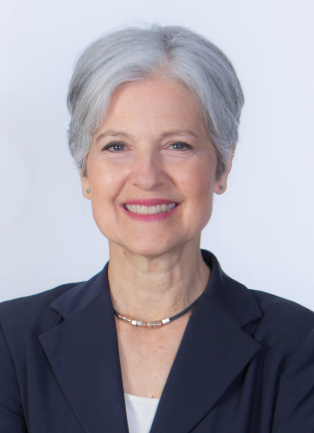

Presidential Candidates
Kamala Harris
- Driven to defend reproductive freedom and safeguard the privacy of patients and providers.
- Will strengthen public education and training as a pathway to the middle class.
- Supports the Green New Deal and investments in clean energy and sustainable infrastructure.
Donald Trump
- Appointed conservative judges to the Supreme Court who overturned Roe v. Wade.
- Skeptical of climate change and its impact; rolled back numerous environmental regulations during his presidency.
- Advocates for tax cuts, particularly the Tax Cuts and Jobs Act, which reduced corporate tax rates.
Jill Stein
- Strongly supports reproductive rights and access to abortion.
- Advocates for a transition to 100% renewable energy by 2030.
- Promotes a "Green Economy" that emphasizes sustainability and job creation in renewable energy sectors.

Chase Oliver
- Advocates for protecting and expanding access to abortion services.
- Views climate change as an existential threat and supports aggressive policies to combat it.
- Emphasizes the importance of raising the minimum wage and supporting labor unions, advocating for workers’ rights to fair pay and safe working conditions.